從零建站、舊站升級到搜尋排名——不只做出網站,更要做出能被找到、被信任、帶來詢問的品牌主場。
觸及、規則、帳號權限,都由平台決定。
辛苦發文,粉絲不一定看得到。
流量不穩,成本可能提高。
被檢舉、誤判,都可能影響營運。
別把唯一入口交給別人!
廣告與短影音把人帶進來,官網把信任與詢問接住——這也是五段服務裡網站排在基礎建設的原因。
有官網的品牌 vs 僅依賴社群的品牌。
從你的經營痛點出發,打造真正有用的網站。
依照客戶需求與消費流程,打造能帶來詢問的網站。
追蹤訪客行為與網站成效,讓每次調整都有依據。
擺脫只靠社群的風險,累積品牌自己的客戶與內容。
從設計與業務顧問角度,協助釐清問題、提升成交機會。
從第一次談到交付,每一步做什麼、你會拿到什麼。
一頁式(純單頁上下滾動、錨點導覽)、企業形象(4–5 頁,可加後台)或電商(購物車/金流)——依目標與預算選對型,不做多餘的頁。
第一次面談定文案:首頁/產品特色/客戶見證/常見問題/立即購買 8 段落規劃,文字定稿再進設計。
套用品牌色與版型(與視覺設計同步),AI 輔助素材降低工時,「量化大於完美」快速上線。
基礎 SEO 設定、首年網域;搭配廣告時預埋 GA / GTM,讓後段投放能追到每一筆轉換。
含首年 1–2 次微調換圖;後台權限、購物車、多語系等模組可另外加購。
不同產業的成交型官網範本——每一套都能直接改成你的官網。點開看桌機與手機版。
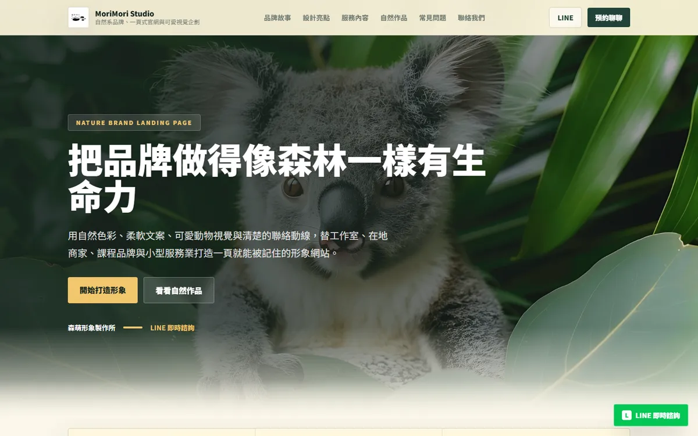
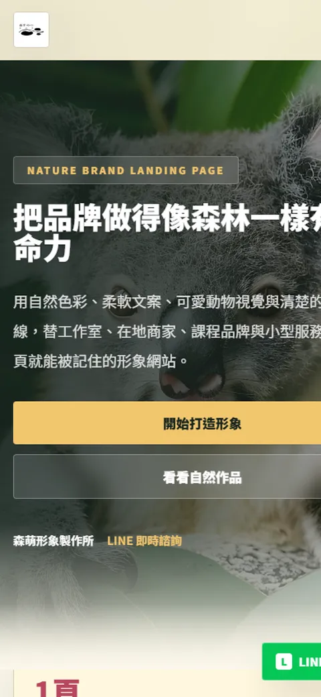
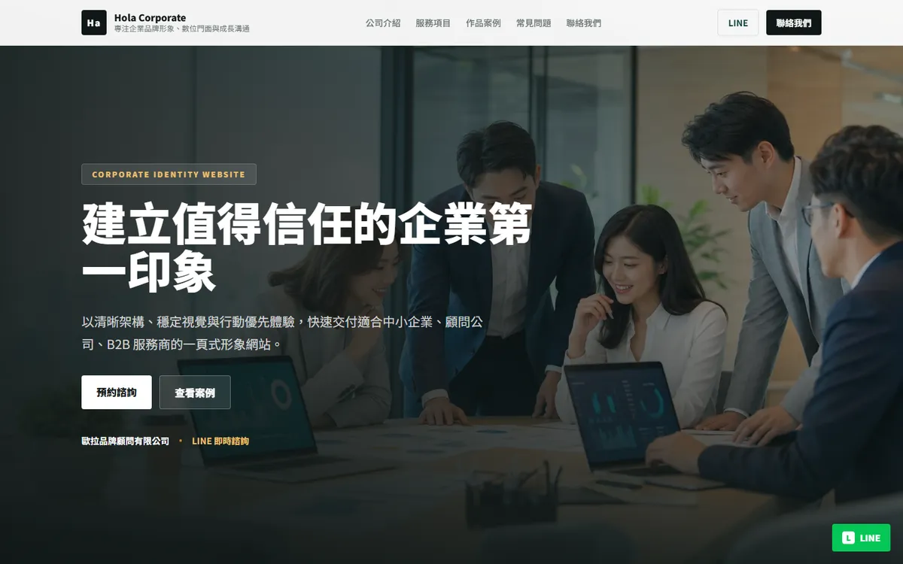
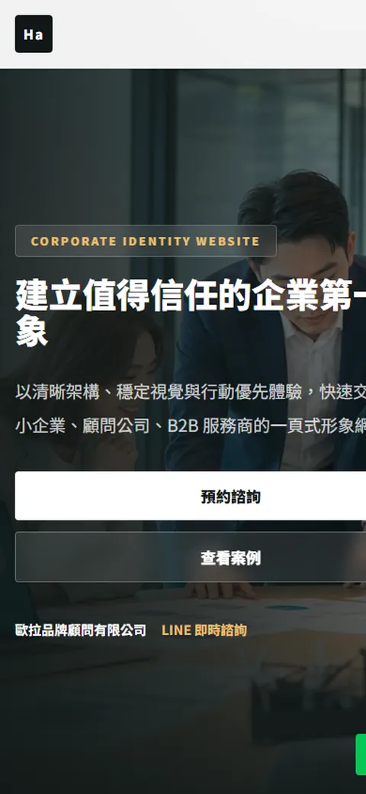
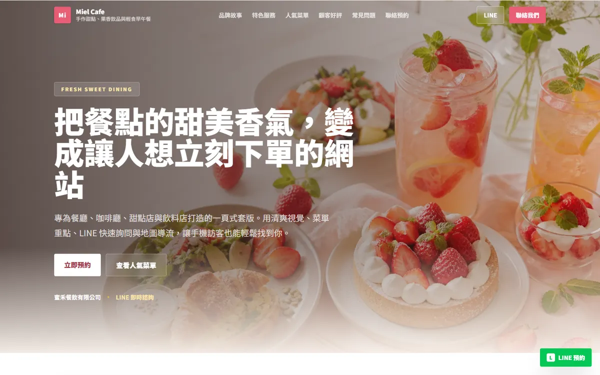
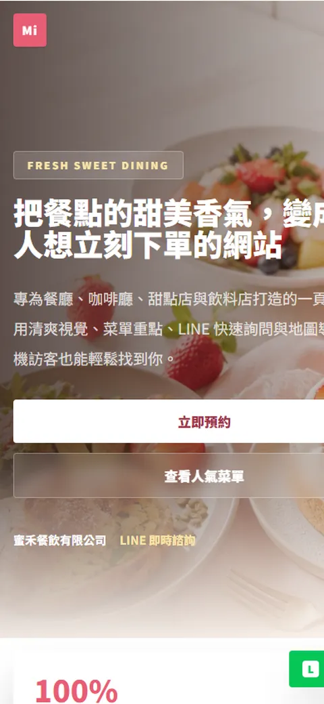
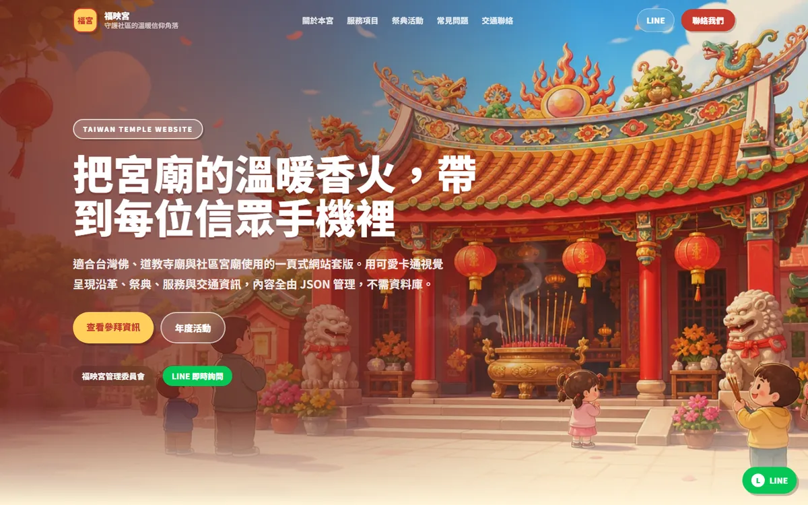
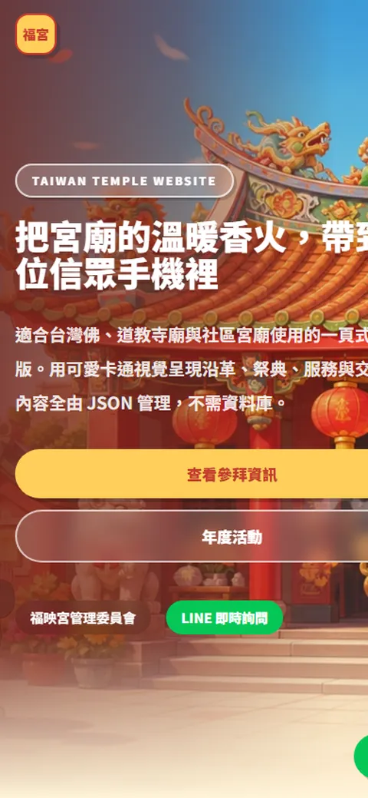
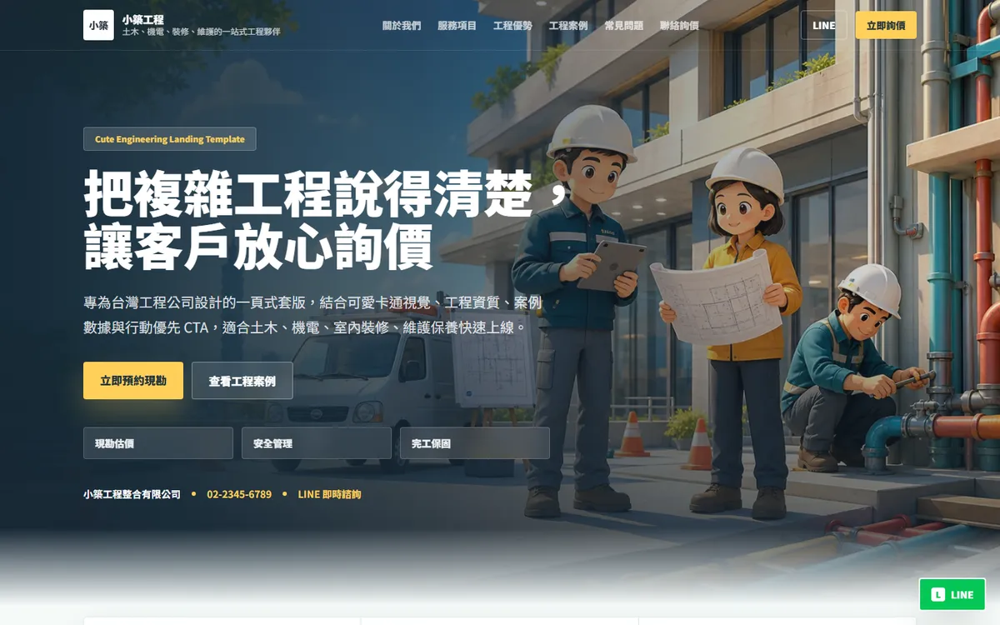
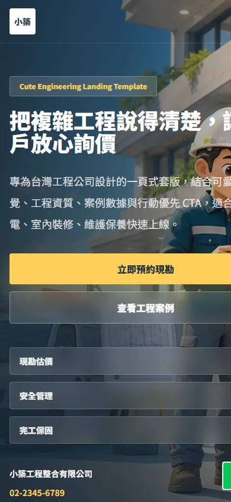
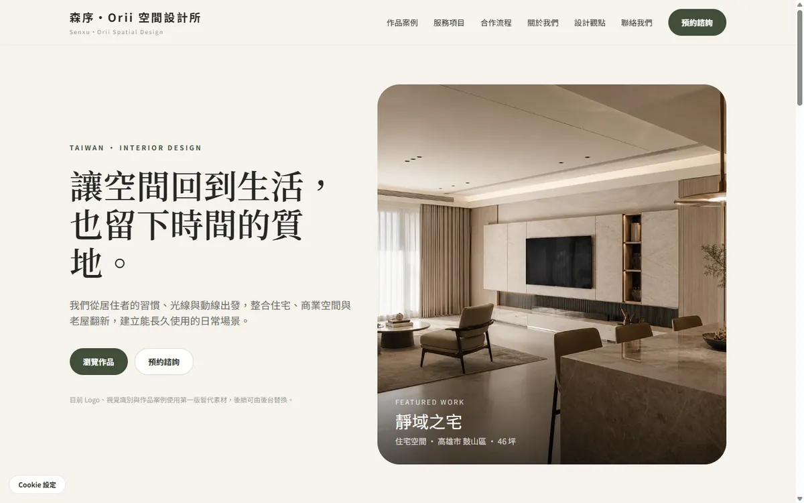
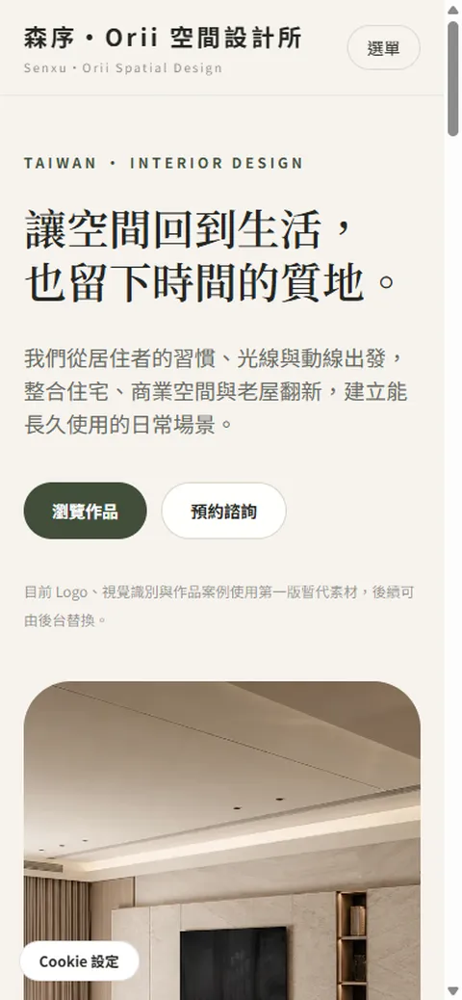
客戶一律以產業描述呈現。
網站、社群、印刷、包裝,讓視覺一致延伸到每個接觸點;印刷與包裝由 豐澤的視覺設計 接手,同一套視覺 100% 延伸。
省時省力:官網與社群視覺同一個窗口。
應用更一致:印刷物、包裝、菜單同一套。
專注核心業務,不用在多個廠商之間傳話。
提升整體質感,線上線下每個接觸點一致。
AI 能快速產出,但不代表方向正確、流程完整。
產出容易,判斷困難。
能夠上線,不等於能成交。
單次修改容易,長期維護仍需規劃。
別再觀望,現在就為品牌建立自己的數位總部。
有無官網?效能如何?是否過度依賴社群?
分析現況、找出問題,提供適合的解決方案。
不要再等,風險每天都在累積。
現在開始,讓官網成為你的品牌資產。 預約免費診斷 →
留下資料,我們安排免費診斷,會告訴你三件事: